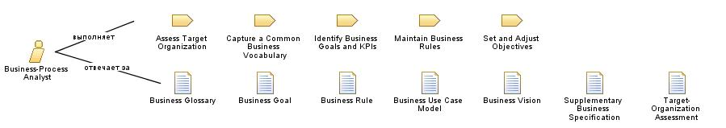

| Роль: Business-Process Analyst |
|
 |
| This role leads and coordinates business requirements elicitation by outlining and delimiting the organization being modeled. |
| Наборы ролей: Аналитики |
|
Взаимосвязи
 |
| Дополнительно выполняет |
|
| Изменяет |
|
Основное описание
|
When a use-case approach is taken, the business process analyst leads and coordinates business use-case modeling by
outlining and delimiting the organization being modeled-for example, by establishing what business actors and business
use cases exist and how they interact.
|
Персонал
| Квалификация |
A person acting as business-process analyst must be a good facilitator and have excellent communication skills.
Knowledge of the business domain is essential for those acting in this role; however, it is not necessary for other
roles.
A business-process analyst should be prepared to:
-
assess the situation of the target organization where the project's end-product will be deployed
-
understand customer and user requirements, their strategies, and their goals
-
perform a cost/benefit analysis for any suggested changes in the target organization
-
discuss and support those who market and sell the end-product of the project
|
| Подходы к назначению |
The following are some approaches to assigning this role:
-
Assign the Business-Process Analyst and Business Architect (and sometimes Business Designer) roles to the same
person. These roles interact a lot, so it can be more efficient to have a single person responsible for both roles.
-
Assign the Business-Process Analyst and System Analyst roles to the same person - useful when the business context
needs to be understood, but the organization doesn't have existing Business-Process Analyst skills. Many common
skills exist between these roles. One concern is that this person may find it difficult to separate business needs
from possible solutions, as the System Analyst works with requirements for automated systems.
-
Assign the Business-Process Analyst and Test Analyst roles to the same person - useful where customers are actively
involved in the project definition and ongoing assessment. You might mix this with some more technically skilled
staff assigned solely to the Business-Process Analyst and Test Analyst roles.
|
Дополнительные сведения
|
© Copyright IBM Corp. 1987, 2006. Все права защищены..
© Copyright IBM Corp. 1987, 2006. Все права защищены..
|
|